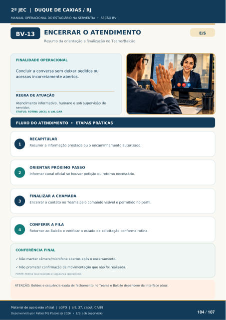

Texto da camada original do PDF
ENCERRAR O ATENDIMENTO
Resumo da orientação e finalização no Teams/Balcão
FINALIDADE OPERACIONAL
Concluir a conversa sem deixar pedidos ou acessos incorretamente abertos.
REGRA DE ATUAÇÃO
Atendimento informativo, humano e sob supervisão de servidor.
STATUS: ROTINA LOCAL A VALIDAR
FLUXO DO ATENDIMENTO • ETAPAS PRÁTICAS
1
RECAPITULAR
Resumir a informação prestada ou o encaminhamento autorizado.
2
ORIENTAR PRÓXIMO PASSO
Informar canal oficial se houver petição ou retorno necessário.
3
FINALIZAR A CHAMADA
Encerrar o contato no Teams pelo comando visível e permitido no perfil.
4
CONFERIR A FILA
Retornar ao Balcão e verificar o estado da solicitação conforme rotina.
CONFERÊNCIA FINAL
Não manter câmera/microfone abertos após o encerramento.
Não prometer confirmação de movimentação que não foi realizada.
FONTE: Rotina local relatada e segurança operacional.
ATENÇÃO: Botões e sequência exata de fechamento no Teams e Balcão dependem da interface atual.
Ver também o infográfico original (página 104)
